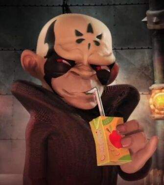
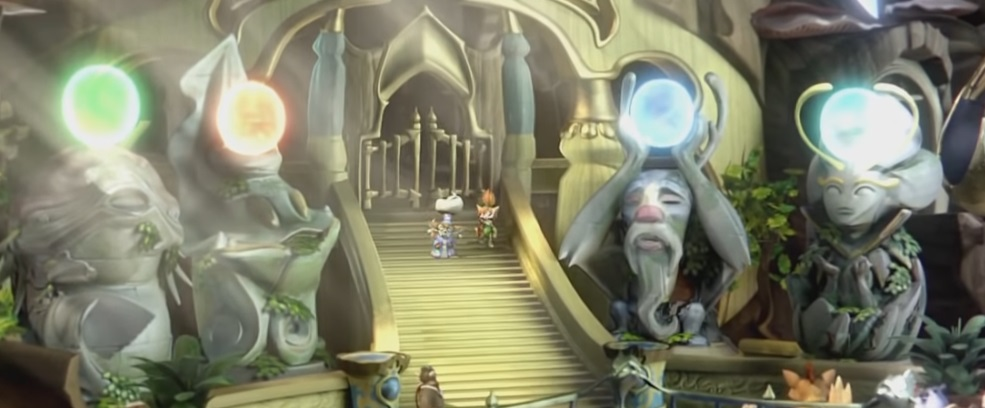
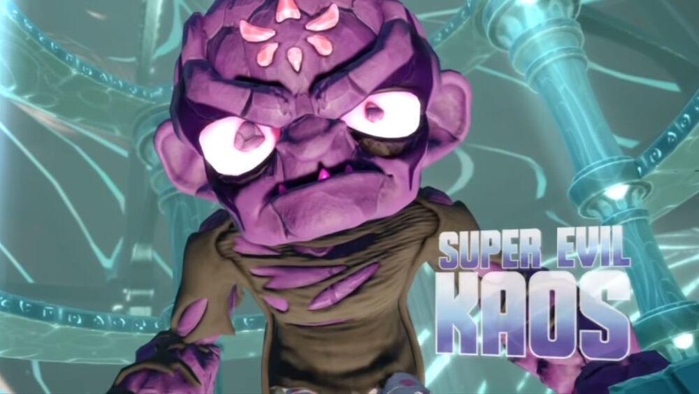
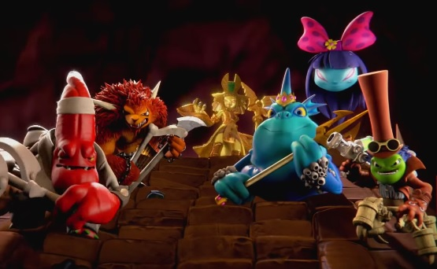

| Lore | Page 2 | Page 3 |
|---|
When Toys for Bob had its programmers make this game, they decided to keep to their trend, and keep a storyline to this all. That's where the lore comes in.
In the first game, Kaos, the dark Portal Master, arrives in a flying castle from the Outlands to destroy the Core of Light guarded by Master Eon and his Skylanders.
The guy has issues. Whenever sending out mini-bosses, he usually meantions his Giant Floating Head as something to fear. It's probably because Eon called it ridiculous
He successfully does so, sending out a shockwave which both destroys Master Eon's body and sends the Skylanders defending Skylands to another universe. Now, you, a Portal Master of Earth, must use the Skylanders that have crashlanded in your world on your Portal to send them back, fix the Core of Light, and defeat Kaos' armies. Along the way, you befriend some NPCs to help you, all of them living in the Ruins Game Hub. Such Companions include:
At the end of it all, Master Eon has his assistant Hugo use portals to send Kaos to Earth.
Then there's the second game. Kaos, after coming back to life through the use of a portal, has found and accidentally re-activated an Ancient Arkeyan Conquertron. So, Eon reveals to you the Giants; The First Generation of Skylanders who are capable of certain tasks that normal Skylanders can't. For example, they are capable of breaking tougher items for power-ups, instantly squashing small enemies, and performing "Feats of Strength", which are activities where Giants can do things such as moving floating islands, or lifting a wall of logs. Using the Giants, you must stop Kaos from reviving the Arkeyan King's armies in the Lost City of Arkus.
Also, Flynn bought a new ship called the Dread-Yacht. It's cursed, but he doesn't think so. In the end of the game, after beating Kaos, he returns to his castle to find someone familiar.
After that: Skylanders Swap Force. Flyn's on vacation in the Cloudbreak Islands to watch the once-a-century magical eruption, when Tessa, a fox girl from Woodburrow, arrive on her bird Whiskers, announcing her village is under attack. Once you deal with that, Rufus the town crier tells you that the Chieftess has been kidnapped. It's soon revealed that Kaos has found Petrified Darkness, an ancient material originally used to power the Arkeyan Battle Suits. He's made an Evilizer, which is a laser that turns things evil. He plans to use it to Evilize one of the four ancient magical creatures that gather at the volcano to replenish the realm's magic. Then HE finds that his MOTHER, her name later retconned as Kaossandra as of the Netflix Series airing, has crashed his castle and invited her friends. Taking over the plan, she decides to take over the Cloudbreak Islands like what happened a hundred years ago. So, to stop her, you need to use the Swap Force to beat her like they did a century ago. Unlike other Skylanders, the Swap Force are capable of switching upper and lower halves. By doing so, they can also swap abilities. For example, Wash Buckler can perform Climb tasks, but if he swaps with Rubble Rouser, he can now do Dig tasks with this bottom half, and vice versa. With these new Skylanders, you the Portal Master must go around the Cloudbreak Islands to save the Flashfin of Mudwater Hollow, the Terrasquid of the Twisty Tunnels, the Frosthound of the Frostfest Mountains, and the Tree Spirit of the Fantasm Forest from Kaos and his mother's forces. Go from island to island, fighting evilized bosses. Meet allies along the way, like the mechanic Sharpfin, Gillmen, and the town advisor Rufus.
Once you've saved the Four Ancient Elementals, you see that Kaos' Mother kidnaps Tessa, holding her hostage. You, Flynn, and also Sharpfin, now have to break into their Fortress to save her. However, after beating Kaos' Mom, Kaos reveals he has made a new plan behind her back, planting his Petrified Darkness into the volcano to evilize the magic anyway. In the process, he turns himself into the giant Super Evil Kaos. You then beat him.
The next game is the first one where Kaos is genuinely competent. By shattering the Cloudcracker Prison of Traptanium, he releases the infamous Doom Raiders (Fun Fact:the member Chompy Mage was fought all the way back in Giants), to have them fight for him to take over all of Skylands. However, cracking Cloudcracker sent the Trap Team, the Skylanders that imprisoned the Doom Raiders in the first place, along with the Traptanium forming the prison, to Earth. Armed with Traptanium weapons, and Traps to capture Villains of each element, Buzz launches Skylander's Academy alongside the undead inventor Mags to combat the forces of the Darkness, using Traps to have Villains fight for YOU!
First, you capture the Gulper of the Water element as the second boss of the game. Then, heading to Know-It-All Island for information, you fight and capture the Chompy Mage of the Life element. As the Doom Raiders bicker amongst themselves, Kaos goes to take advantage of the inner chaos. Eventually, you follow Tessa to stop Chef Pepperjack of the Fire element from using a Phoenix Egg to make a Spicy Omelette of Doom. With their ranks diminishing, Kaos hopes they'll begin to follow his orders, but the Golden Queen instead turns Kaos to gold, steals his fortress and servant Glumshanks, and head off the build their Ultimate Weapon. Realizing he really needs help,